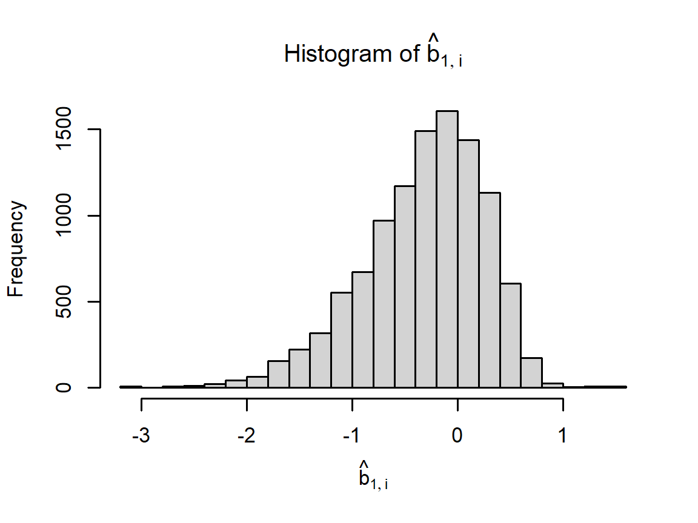
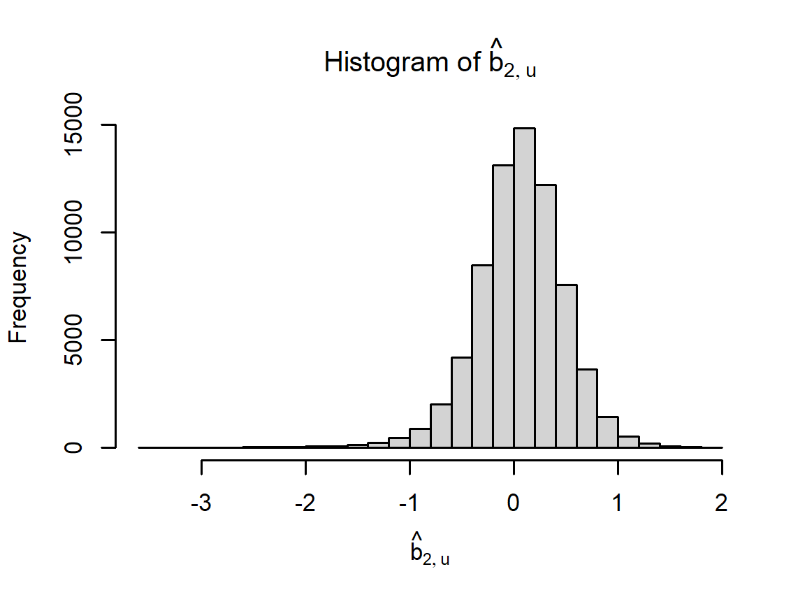
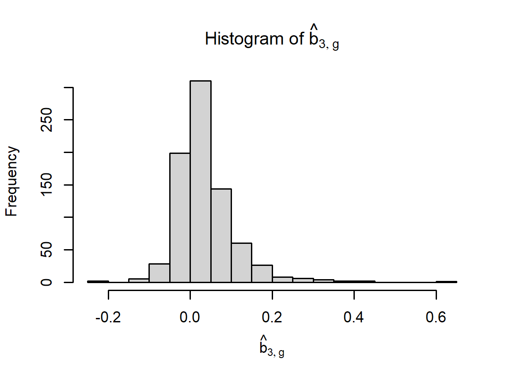
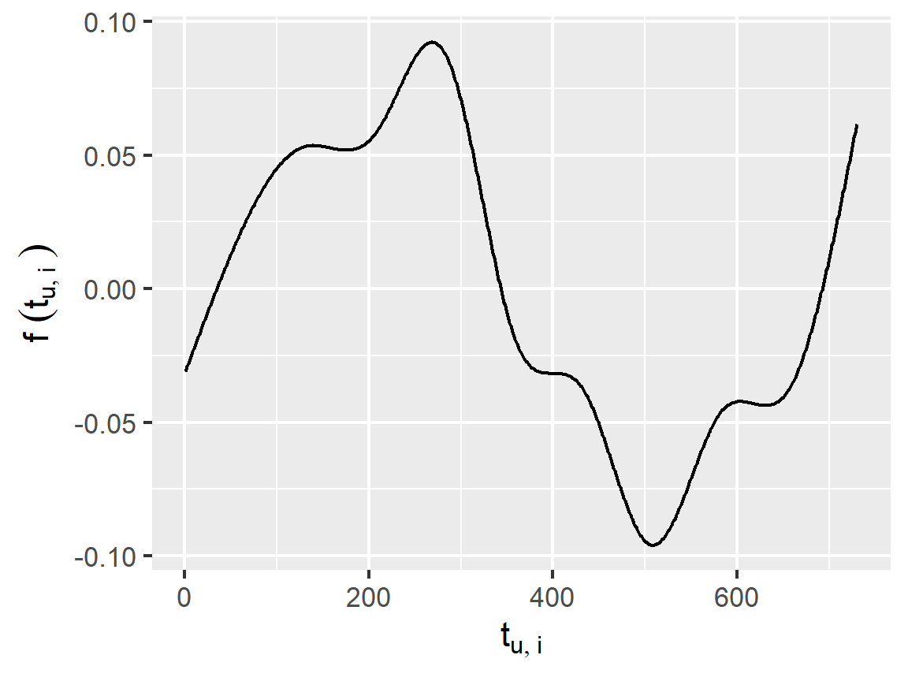
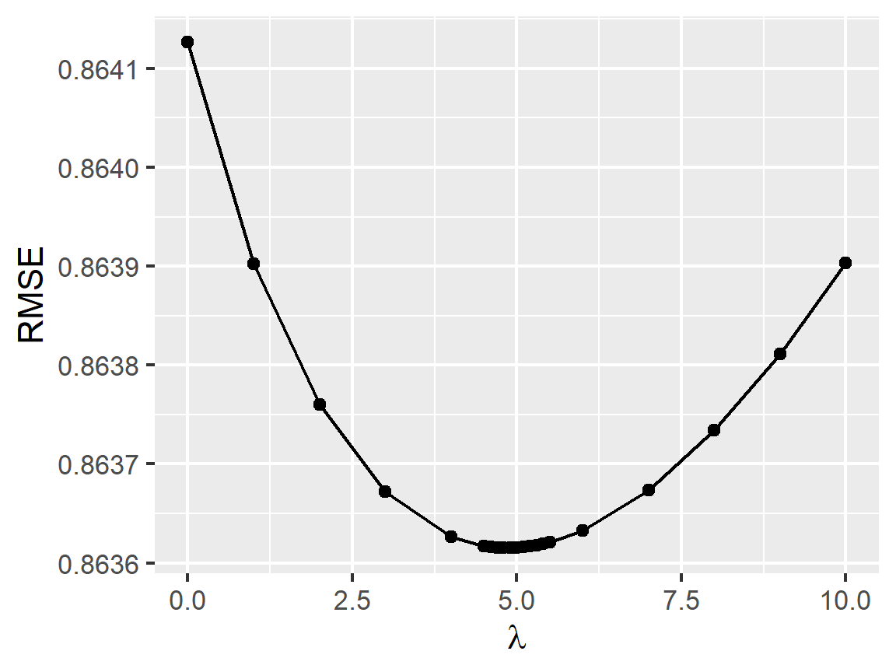

Chapter 2 Linear regression models
We start by splitting edx into a training and test set:
# Test set will be 10% of edx data
set.seed(1, sample.kind="Rounding")
test_index <- createDataPartition(y = edx$rating, times = 1, p = 0.1, list = FALSE)
edx_train <- edx[-test_index,]
temp <- edx[test_index,]
# Make sure userId and movieId in edx_test set are also in edx_train set
edx_test <- temp |>
semi_join(edx_train, by = "movieId") |>
semi_join(edx_train, by = "userId") |>
as.data.table()
# Add rows removed from edx_test set back into edx_train set
removed2 <- anti_join(temp, edx_test)
edx_train <- rbind(edx_train, removed2) |> as.data.table()
rm(removed2, temp, test_index)2.1 Overview and notation
Let \(Y\) be a \(N_\mathrm{U}\times N_\mathrm{M}\) matrix of movie ratings, such that \(Y_{u,i}\) is the rating user \(u\) has given or would give movie \(i\). Additionally, define \(X_j\) such that \(X_{u,i}\) denotes the \(j\)th attribute of user-movie pair \((u,i)\). Such attributes include \(u\) and \(i\) themselves, the genres of movie \(i\), and the timestamp at which the rating was made. Finally, only the indices \((u,i)\) in the training set, denoted \(\mathcal{T}\), are observable.
The goal is to estimate \(Y\) given the observable elements of \(Y\) (the actual ratings). Given a user-movie pair \((u,i)\), we model \(Y_r\) using a multiple linear regression model: \[ y_{u,i} \sim \mu + \left(\sum_j \beta_{j;u,i} \right) +\varepsilon_{u,i}, \] where
- \(\mu\) represents the “true” rating for all movies,
- \(\beta_{j;u,i}\) is the \(j\)th bias term for pair \((u,i)\),
- and \(\varepsilon_{u,i}\) is random error, all independently sampled from the same zero-mean distribution.
We further define \(b_j\) such that \[ \left(X_{j;u,i} = n\right) \implies \left(\beta_{j;u,i} = b_{j;n}\right). \]
We can write the above in matrix form: \[ Y \sim \mu + \left( \sum_j \beta_j \right) + \varepsilon. \]
The objective is to minimize the sum of the squared errors \[ \text{SE} = \sum_{(u,i)\in\mathcal{T}} \left[Y_{u,i} - \mu - \sum_j \beta_{j;u,i} \right]^2 \] where \(\mathcal{T}\) represents the test set of observed movie ratings.
The estimated value of \(Y_{u,v}\) for \((u,v) \notin \mathcal{T}\) is \[ \hat{Y}_{u,v} = \mu + \sum_j \beta_{j;u,v}. \]
2.2 Using the mean rating only
Our first model is of the form
\[
Y_{u,i} \sim \mu + \varepsilon_{u,i}.
\]
The best estimate \(\hat{\mu}\) of \(\mu\) is the mean of all ratings in edx_train, or:
mu <- mean(edx_test$rating)
mu## [1] 3.512551This model gives the following RMSE values when applied to edx_test:
# When multiple effects (movie, user, genre) are added in our model, some predictions
# may fall out of the valid range. This function fixes these predictions to the range
# [0.5, 5].
clamp <- function(x) raster::clamp(as.numeric(x), 0.5, 5)
# Compute RMSE and add to a tibble.
RMSEs <- tibble(Method = c("Mean only"),
RMSE = RMSE(mu, edx_test$rating),
"RMSE (clamped estimates)" = RMSE(mu, edx_test$rating))
RMSEs[[nrow(RMSEs),'RMSE']]## [1] 1.0600542.3 Modeling movie effects
We add a term to our model for movie effects: \[ Y_{u,i} \sim \mu + b_{1;i}i + \varepsilon_{u,i}, \] The least-squares estimate \(\hat{b}_{1;i}\) of \(b_{1;i}\) is the training-set mean of \(Y_{u,i} - \hat{\mu}\) for each movie \(i\). The following code computes \(\hat{b}_{1;i}\) for each \(i\) and plots these as a histogram:
# Least-squares estimate of movie effect is the mean of (rating - mu) for all
# ratings of that movie.
movie_biases <- edx_train |>
group_by(movieId) |>
summarize(b_i = mean(rating - mu))
# Plot a histogram of the movie effects
par(cex = 0.7)
hist(movie_biases$b_i, 30, xlab = TeX(r'[$\hat{b}_{1,i}$]'),
main = TeX(r'[Histogram of $\hat{b}_{1,i}$]'))
The new model gives the following RMSE values when applied to edx_test:
# Obtain predictions for the edx_test set
predicted_ratings <- edx_test |>
left_join(movie_biases, by='movieId') |>
mutate(pred = mu + b_i) |> pull(pred)
# Compute RMSE and add to data.table
RMSEs <- RMSEs |>
add_row(Method = "Movie effects",
RMSE = RMSE(predicted_ratings, edx_test$rating),
"RMSE (clamped estimates)" = RMSE(clamp(predicted_ratings), edx_test$rating))
RMSEs[nrow(RMSEs),] |> kable(align='lrr', booktabs = T) |> row_spec(0, bold = T)| Method | RMSE | RMSE (clamped estimates) |
|---|---|---|
| Movie effects | 0.9429615 | 0.9429615 |
2.3.1 Clamping the predictions
In the above table, clamping means setting any predictions less than 0.5 to 0.5, and any predictions greater than 5.0 to 5.0, thus enforcing the limits of possible ratings. This slightly reduces the RMSE when multiple biases are added to the model, as we demonstrate below.
2.4 Modeling movie and user effects
We add a term \(b_u\) to our model for user effects: \[ Y_{u,i} \sim \mu + b_{1;i}i + b_{2;u}u + \varepsilon_{u,i}. \] We approximate \(b_{2,u}\) for each user \(u\) as the mean of \(\hat{b}_u = Y_{u,i} - \hat{\mu} - \hat{b}_{1;i}\). The following code computes \(\hat{b}_{2;u}\) for each \(u\) and plots these as a histogram:
# Estimate user effects
user_biases <- edx_train |>
left_join(movie_biases, by='movieId') |>
group_by(userId) |>
summarize(b_u = mean(rating - mu - b_i))
# Plot a histogram of the user effects
par(cex = 0.7)
hist(user_biases$b_u, 30, xlab = TeX(r'[$\hat{b}_{2,u}$]'),
main = TeX(r'[Histogram of $\hat{b}_{2,u}$]'))
The new model gives the following RMSE values when applied to the edx_test set:
# Obtain predictions for the edx_test set
predicted_ratings <- edx_test |>
left_join(movie_biases, by='movieId') |>
left_join(user_biases, by='userId') |>
mutate(pred = mu + b_i + b_u) |> pull(pred)
# Compute RMSE and add to data.table
RMSEs <- RMSEs |>
add_row(Method = "Movie + user effects",
RMSE = RMSE(predicted_ratings, edx_test$rating),
"RMSE (clamped estimates)" = RMSE(clamp(predicted_ratings), edx_test$rating))
RMSEs[nrow(RMSEs),] |> kable(align='lrr', booktabs = T) |> row_spec(0, bold = T)| Method | RMSE | RMSE (clamped estimates) |
|---|---|---|
| Movie + user effects | 0.8646843 | 0.8644818 |
2.5 Adding genre effects
We add another bias term \(b_g\) to our model for genre effects: \[ Y_{u,i} \sim \mu + b_{1;i} + b_{2;u} + b_{3;g(i)} + \varepsilon_{u,i}, \] where \(g(i)\) is the combination of genres for movie \(i\). We approximate \(b_{3;g}\) for each genre combination \(g\) as the mean of \(\hat{b}_u = Y_{u;i} - \hat{\mu} - \hat{b}_{1;i} - \hat{b}_{2;u}\), averaged over all ratings in the training set where \(g(i) = g\). The following code computes \(\hat{b}_{3,g}\) for each \(g\) and plots these as a histogram:
# Estimate genre effects
genre_biases <- edx_train |>
left_join(movie_biases, by='movieId') |>
left_join(user_biases, by='userId') |>
group_by(genres) |>
summarize(b_g = mean(rating - mu - b_i - b_u))
# Plot a histogram of the genre effects
par(cex = 0.7)
hist(genre_biases$b_g, 30, xlab = TeX(r'[$\hat{b}_{3,g}$]'),
main = TeX(r'[Histogram of $\hat{b}_{3,g}$]'))
The new model gives the following RMSE values when applied to the edx_test set:
# Obtain predictions for the edx_test set
predicted_ratings <- edx_test |>
left_join(movie_biases, by='movieId') |>
left_join(user_biases, by='userId') |>
left_join(genre_biases, by='genres') |>
mutate(pred = mu + b_i + b_u + b_g) |> pull(pred)
# Compute RMSE and add to data.table
RMSEs <- RMSEs |>
add_row(Method = "Movie + user + genre effects",
RMSE = RMSE(predicted_ratings, edx_test$rating),
"RMSE (clamped estimates)" = RMSE(clamp(predicted_ratings), edx_test$rating))
RMSEs[nrow(RMSEs),] |> kable(align='lrr', booktabs = T) |> row_spec(0, bold = T)| Method | RMSE | RMSE (clamped estimates) |
|---|---|---|
| Movie + user + genre effects | 0.8643241 | 0.8641138 |
2.6 Adding a time effect
Consider a new model with the form \[ Y_{u,i} \sim \mu + b_{1;i} + b_{2;u} + b_{3;g(i)} + f(t_{u,i}) + \varepsilon_{u,i}. \] where \(t_{u,i}\) is a week index, such that the date of the oldest rating is defined as the start of Week 1.
The new optimization problem minimizes \[ \text{SE} = \sum_{(u,i)\in\mathcal{T}} \left[y_{u,i} - \mu - b_{1;i} - b_{2;u} - b_{3;g(i)} - f(t_{u,i})\right]^2. \] Note the addition of the \(t\) subscript compared to the original problem formulation defined in Section 2.1, with \(\mu_{t;u,i} = \mu - f(t_{u,i})\).
The following code defines \(f(t)\) as the smoothed average rating on Week \(t\), minus \(\mu\):
# Add a week number to each rating in the edx_train and edx_test datasets
edx_train <- edx_train |>
mutate(weekNum = (timestamp - min(timestamp)) |>
as.numeric(unit = "days") |> {\(x) floor(x/7) + 1}() )
edx_test <- edx_test |>
mutate(weekNum = (timestamp - min(timestamp)) |>
as.numeric(unit = "days") |> {\(x) floor(x/7) + 1}() )
# Fit a smooth curve to the ratings as a function of time
fit <- mgcv::gam(rating ~ s(weekNum, bs = "cs"),
family = gaussian(), data = edx_train) # apply smoothing
# Evaluate the fitted curve for each week number
r <- seq(1,max(edx_train$weekNum))
f_t <- mgcv::predict.gam(fit, data.frame(weekNum = r)) - mu
rm(fit)
# Plot the fitted curve
ggplot(data.frame(weekNum = r, f_t), aes(weekNum, f_t)) + geom_line() +
xlab(TeX(r'[$t_{u,i}$]')) + ylab(TeX(r'[$f\,(t_{u,i}\,)$]'))
We approximate \(b_{t,g}\) for each genre combination \(g\) as the mean of \(\hat{b}_u = Y_{u,i} - \hat{\mu} - \hat{b}_{1;i} - \hat{b}_{2;u} - b_{3;g(i)}\). Fitting the \(b_{j;t}\)’s \(j=1,2,3\), for the new model, we obtain RMSE values of:
# Compute the biases
movie_biases_t <- edx_train |>
mutate(f_t = f_t[weekNum]) |>
group_by(movieId) |>
summarize(b_i = mean(rating - mu - f_t))
user_biases_t <- edx_train |>
mutate(f_t = f_t[weekNum]) |>
left_join(movie_biases_t, by='movieId') |>
group_by(userId) |>
summarize(b_u = mean(rating - mu - b_i - f_t))
genre_biases_t <- edx_train |>
mutate(f_t = f_t[weekNum]) |>
left_join(movie_biases_t, by='movieId') |>
left_join(user_biases_t, by='userId') |>
group_by(genres) |>
summarize(b_g = mean(rating - mu - b_i - b_u - f_t))
# Obtain predictions for the edx_test set
predicted_ratings <- edx_test |>
mutate(f_t = f_t[weekNum]) |>
left_join(movie_biases_t, by='movieId') |>
left_join(user_biases_t, by='userId') |>
left_join(genre_biases_t, by='genres') |>
mutate(pred = mu + b_i + b_u + b_g + f_t) |>
pull(pred)
# Compute RMSE and add to data.table
RMSEs <- RMSEs |>
add_row(Method = "Movie + user + genre + time effects",
RMSE = RMSE(predicted_ratings, edx_test$rating),
"RMSE (clamped estimates)" = RMSE(clamp(predicted_ratings), edx_test$rating))
RMSEs[nrow(RMSEs),] |> kable(align='lrr', booktabs = T) |> row_spec(0, bold = T)| Method | RMSE | RMSE (clamped estimates) |
|---|---|---|
| Movie + user + genre + time effects | 0.8641266 | 0.8639174 |
2.7 Adding \(L_2\) regularization
To improve our model further, we can add \(L_2\) regularization. Whereas the previous model fitting procedure minimizes \[ \text{SE} = \sum_{(u,i)\in\mathcal{T}} \left[y_{u,i} - \mu - b_{1;i} - b_{2;u} - b_{3;g(i)} - f(t_{u,i})\right]^2, \] in this section we add a penalty term such that the new expression to minimize is as follows: \[ \text{SE} + \lambda\sum_j\left\Vert b_j\right\Vert_2^2. \] Fitting the regularized model to the training set for different \(\lambda\), and using the test set for RMSE calculation, we obtain the following plot of RMSE against \(\lambda\).
# List of regularization parameter values to try.
# Since I know the approximate optimal value, I added more points
# in this range.
lambdas <- c(0,1,2,3,4,seq(4.5,5.5,0.1),6,7,8,9,10)
# Compute RMSE values for each lambda using the *test set.
rmses <- sapply(lambdas, function(l){
message("lambda = ", l)
# Compute movie, user, genre, and time effects using the test set.
# Note that f_t here refers to the variable f_t and not the f_t column in
# any of the data.tables.
movie_biases_reg <-
edx_train[, .(b_i = sum(rating - mu - f_t[weekNum])/(.N+l)), by = 'movieId']
temp <- movie_biases_reg[edx_train, on = 'movieId']
user_biases_reg <-
temp[, .(b_u = sum(rating - mu - b_i - f_t[weekNum])/(.N+l)), by = 'userId']
temp <- user_biases_reg[temp, on = 'userId']
genre_biases_reg <-
temp[, .(b_g = sum(rating - mu - b_i - b_u - f_t[weekNum])/(.N+l)), by = 'genres']
# Generate predictions
predicted_ratings <- genre_biases_reg[
user_biases_reg[
movie_biases_reg[
edx_test, on = 'movieId'],
on = 'userId'],
on = 'genres'] |>
mutate(pred = mu + b_i + b_u + b_g + f_t[weekNum]) |>
pull(pred)
# Compute RMSE
return(RMSE(predicted_ratings, edx_test$rating))
})
# Plot RMSE against lambda
par(cex = 0.7)
qplot(lambdas, rmses, xlab = TeX(r'($\lambda)'), ylab = 'RMSE', geom = c('point', 'line'))
The optimal value of \(\lambda\) is thus:
lambda <- lambdas[which.min(rmses)]
lambda## [1] 4.9Fitting the regularized model one last time and computing the RMSE on edx_test, we
obtain:
movie_biases_reg <-
edx_train[, .(b_i = sum(rating - mu - f_t[weekNum])/(.N+lambda)), by = 'movieId']
temp <- movie_biases_reg[edx_train, on = 'movieId']
user_biases_reg <-
temp[, .(b_u = sum(rating - mu - b_i - f_t[weekNum])/(.N+lambda)), by = 'userId']
temp <- user_biases_reg[temp, on = 'userId']
genre_biases_reg <-
temp[, .(b_g = sum(rating - mu - b_i - b_u - f_t[weekNum])/(.N+lambda)), by = 'genres']
# Generate predictions for the *edx_test* set.
predicted_ratings_reg <- genre_biases_reg[
user_biases_reg[
movie_biases_reg[
edx_test, on = 'movieId'],
on = 'userId'],
on = 'genres'] |>
mutate(pred = mu + b_i + b_u + b_g + f_t[weekNum]) |>
pull(pred)
rm(temp)
# Compute RMSE and add to data.table
RMSEs <- RMSEs |>
add_row(Method = "Movie + user + genre + time effects (regularized)",
RMSE = RMSE(predicted_ratings_reg, edx_test$rating),
"RMSE (clamped estimates)" =
RMSE(clamp(predicted_ratings_reg), edx_test$rating))
RMSEs[nrow(RMSEs),] |> kable(align='lrr', booktabs = T) |> row_spec(0, bold = T)| Method | RMSE | RMSE (clamped estimates) |
|---|---|---|
| Movie + user + genre + time effects (regularized) | 0.8636151 | 0.8634932 |
2.8 Section summary
The table of RMSEs for all models considered in this section is below.
RMSEs |> kable(align='lrr', booktabs = T, linesep = "") |> row_spec(0, bold = T)| Method | RMSE | RMSE (clamped estimates) |
|---|---|---|
| Mean only | 1.0600537 | 1.0600537 |
| Movie effects | 0.9429615 | 0.9429615 |
| Movie + user effects | 0.8646843 | 0.8644818 |
| Movie + user + genre effects | 0.8643241 | 0.8641138 |
| Movie + user + genre + time effects | 0.8641266 | 0.8639174 |
| Movie + user + genre + time effects (regularized) | 0.8636151 | 0.8634932 |
The results demonstrate that each added feature has reduced the RMSE, as well as adding regularization and clamping; however, there are diminishing returns as each effect is added to the model.